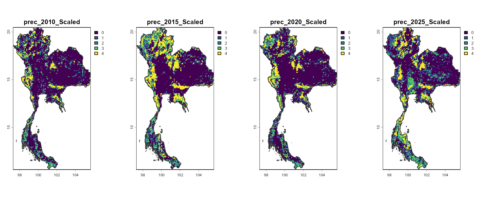
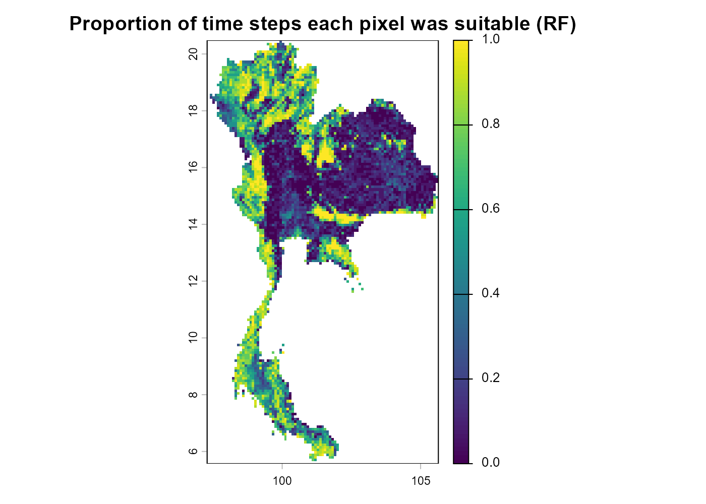
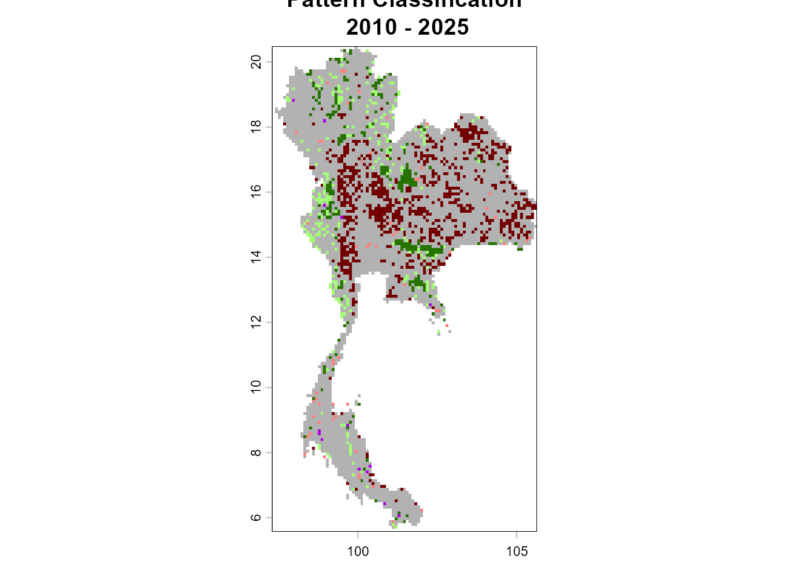
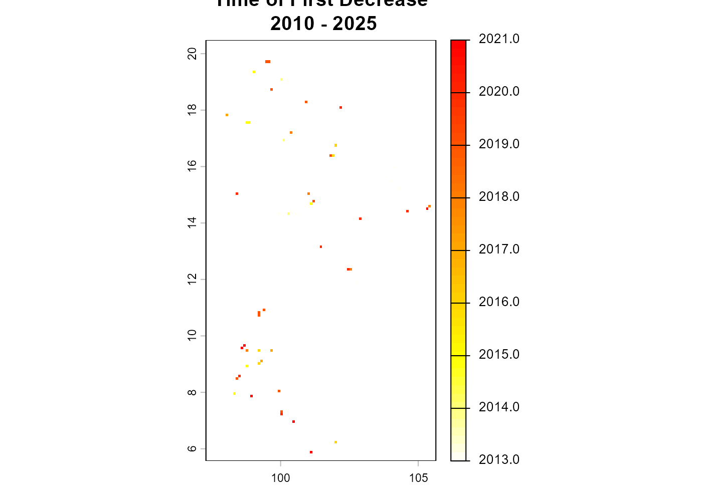
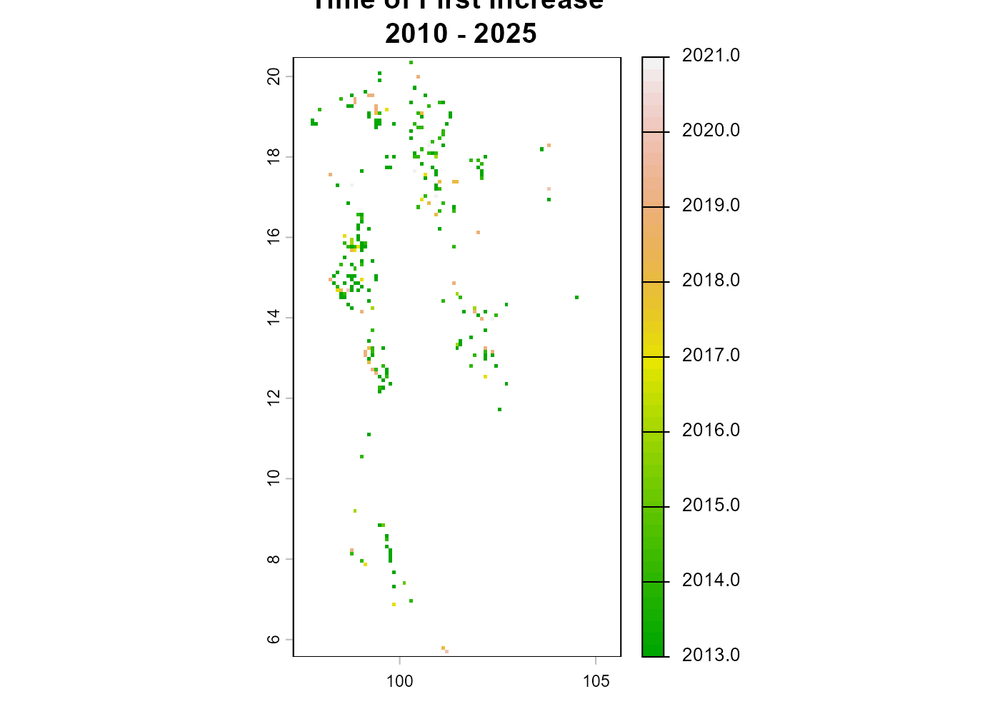
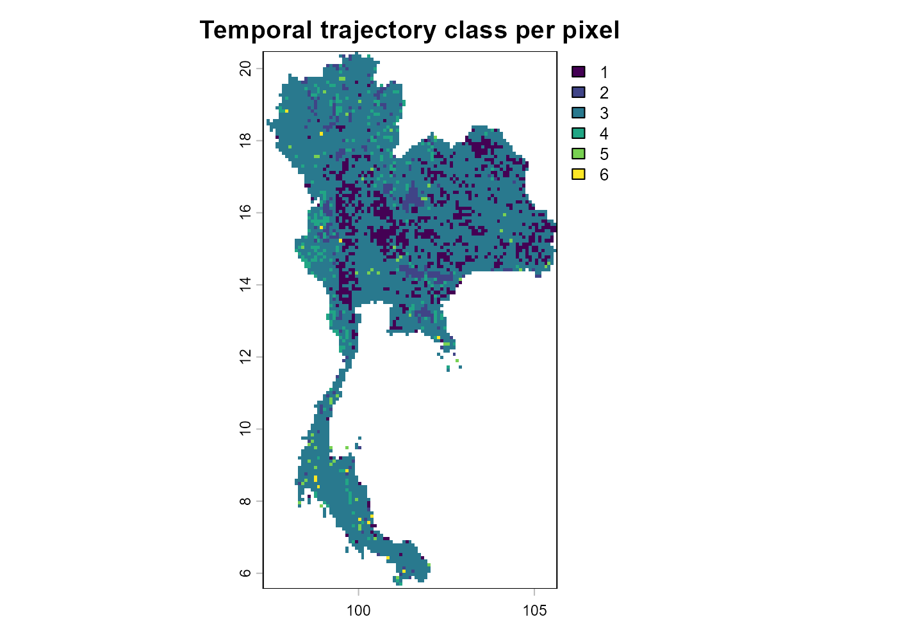
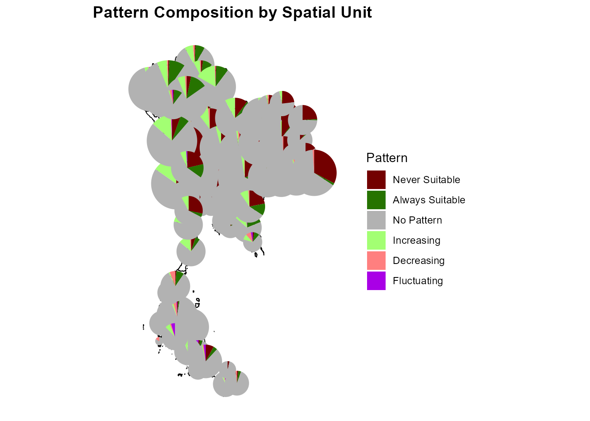
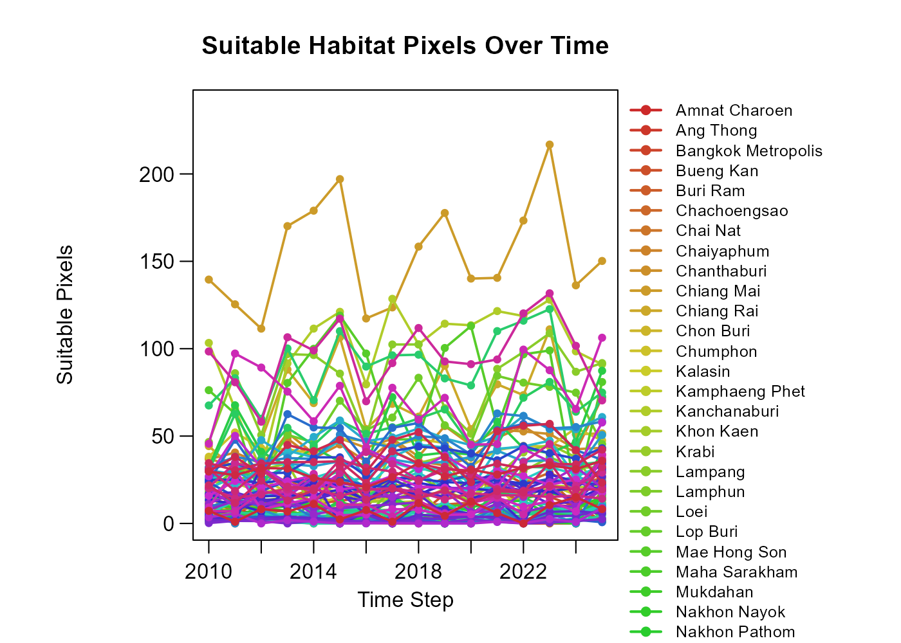
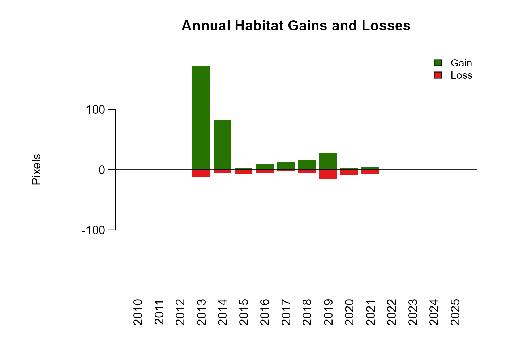
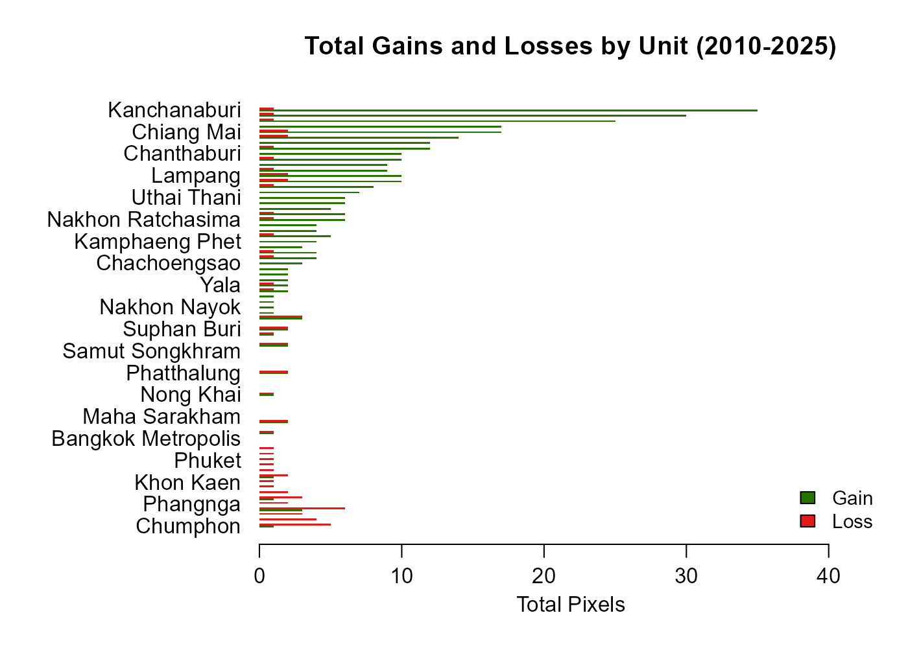

Step 3 — Temporally-explicit SDMs with TemporalModelR
Source:vignettes/Step3_TemporalModelR.Rmd
Step3_TemporalModelR.RmdOverview
Workshop navigation
- Pre-workshop — Downloading the workshop data. Get the Thailand boundary, WorldClim climate layers, and GBIF Sambar records before the workshop starts.
- Step 1: nicheR — Virtual species with nicheR. Build a virtual species niche and map it.
- Step 2: bean — Environmental thinning with bean. Reduce environmental sampling bias before fitting a real niche.
- Step 3: TemporalModelR — Temporally-explicit models with TemporalModelR. Link species occurrences with environmental data through time.
TemporalModelR builds
temporally-explicit species distribution models. Each
occurrence is paired with the environmental conditions at the time
it was recorded, rather than against a long-term average. Models
can then project predictions as time-series surfaces and detect
pixel-level temporal trajectories (always-suitable, never-suitable,
increasing, decreasing, or fluctuating).
Data. Step 3 uses the pre-prepared annual rasters that live under
data/processed/temporal_split/— one precipitation (prec_YYYY.tif), one temperature (temp_YYYY.tif, derived from land-surface temperature), and one NDVI (NDVI_YYYY.tif) file per year. No new climate data is downloaded here — we simply read the local files and stack them. ThePre-workshop.Rmdnotebook produced the Sambar deer GBIF table and the Thailand polygon we use alongside them.
In this Step we will:
- Read the per-year precipitation, temperature, and NDVI rasters and align them to a common grid.
- Build a temporal-mean E-space, thin the GBIF Sambar deer occurrences
once with
beanagainst it, then rarefy withspatiotemporal_rarefaction(), and pair each surviving record with the environment it actually experienced usingtemporally_explicit_extraction(). - Z-score the rasters, summarise their temporal mean, build spatiotemporal CV folds, and create fold-stratified pseudoabsences.
- Fit
build_temporal_glm()andbuild_temporal_rf()models and project predictions across years withgenerate_spatiotemporal_predictions(). - Postprocess with
summarize_raster_outputs(),analyze_temporal_patterns(), andanalyze_trends_by_spatial_unit().
All function names and arguments below follow the official package documentation: https://cjhughes926.github.io/TemporalModelR/
Install and load packages
# ---- CRAN dependencies -----------------------------------------------------
cran_pkgs <- c(
"terra",
"sf",
"dplyr",
"readr",
"viridis",
"randomForest",
"fastcpd",
"rmarkdown",
"knitr",
"remotes",
"geodata",
"bean"
)
to_install <- cran_pkgs[!cran_pkgs %in% rownames(installed.packages())]
if (length(to_install)) install.packages(to_install, dependencies = TRUE)
# ---- TemporalModelR from GitHub --------------------------------------------
if (!requireNamespace("TemporalModelR", quietly = TRUE)) {
remotes::install_github("CJHughes926/TemporalModelR")
}
library(TemporalModelR) # temporally-explicit SDM pipeline
library(bean) # per-year environmental thinning
library(terra) # modern raster + vector spatial backend
library(sf) # tidy vector spatial data ("simple features")
library(dplyr) # tidy data manipulation
library(readr) # fast, friendly CSV reading and writing
# Make every random draw in the rest of the file reproducible.
set.seed(2026)Inputs
# Thailand polygon (from the Pre-workshop). `quiet = TRUE` suppresses the
# usual GDAL chatter so the rendered page stays clean.
thailand <- st_read("data/processed/boundary/thailand_boundary.gpkg",
quiet = TRUE)
# Clean GBIF Sambar deer table from the Pre-workshop. We:
# * restrict to 2010-2025 (the range covered by every per-year raster);
# * rename the GBIF coordinate columns to the conventional `longitude` /
# `latitude` so they match the names bean and TemporalModelR expect;
# * add a `presence = 1L` column so the table is ready to be combined
# with pseudoabsences (presence = 0) later on.
sambar <- read_csv("data/processed/gbif/sambar_thailand.csv",
show_col_types = FALSE) %>%
filter(year >= 2010, year <= 2025) %>% # keep modelled years only
rename(longitude = decimalLongitude, # GBIF -> conventional name
latitude = decimalLatitude) %>% # GBIF -> conventional name
mutate(presence = 1L) # every GBIF record is a presence
# How many records per year survive that filter?
table(sambar$year)##
## 2010 2011 2012 2013 2014 2015 2016 2017 2018 2019 2020 2021 2022 2023 2024 2025
## 7 23 22 27 29 31 30 31 40 55 19 17 68 106 143 226Preprocessing
Align rasters
raster_align() reprojects and resamples every raster
found in input_dir against a reference, then writes the
aligned copies into output_dir. Because the three variables
come from different sources, they do not share an extent, resolution, or
CRS out of the box — we use one of the per-year NDVI files as the
reference grid for everything.
# Quick visual sanity-check of the three "current" layers.
prec_ex <- rast("data/processed/temporal_split/prec_2025.tif")
temp_ex <- rast("data/processed/temporal_split/temp_2025.tif")
NDVI_ex <- rast("data/processed/temporal_split/NDVI_2025.tif")
par(mfrow = c(1, 3))
plot(prec_ex, main = "Precipitation 2025")
plot(temp_ex, main = "Temperature 2025")
plot(NDVI_ex, main = "NDVI 2025")
par(mfrow = c(1, 1)) # reset the plot region back to a single panel
# Source directory of the per-variable per-year split rasters, and target
# directory where the aligned copies will be written.
split_dir <- "data/processed/temporal_split"
aligned_dir <- "data/processed/rasters_aligned"
dir.create(aligned_dir, showWarnings = FALSE, recursive = TRUE)
# Use NDVI as the reference grid — every per-year raster will be reprojected
# / resampled to match its extent, resolution, and CRS.
ref_raster <- NDVI_ex
raster_align(
input_dir = split_dir, # where the per-year rasters currently live
output_dir = aligned_dir, # where the aligned copies will be written
reference_raster = ref_raster, # target grid (extent + resolution + CRS)
overwrite = TRUE # replace any aligned files left from a prior run
)Build a temporal-mean E-space for thinning
Before any thinning, we build a single temporal-mean
reference E-space that summarises the environment Sambar deer
experienced across the entire 2010–2025 window. We compute the per-pixel
mean across years for each of the three aligned variables, then stack
the three mean surfaces into one 3-layer SpatRaster.
This temporal-mean stack will be the reference environmental
space that bean uses to thin every year. Using a
single, period-wide E-space (rather than the year-specific raster of
each occurrence) keeps the thinning grid consistent across
years: a 2014 record and a 2020 record that fall in the same
temporal-mean pod are treated as environmentally redundant, even though
their individual years’ rasters may differ slightly.
# List every aligned per-year raster, then split by variable name.
aligned_files <- list.files(aligned_dir, pattern = "\\.tif$", full.names = TRUE)
# Group the file list by variable name (prec_ / temp_ / NDVI_) so each
# group becomes a multi-layer SpatRaster spanning every year.
prec_files <- file.path(aligned_dir,
grep("prec_", basename(aligned_files), value = TRUE))
temp_files <- file.path(aligned_dir,
grep("temp_", basename(aligned_files), value = TRUE))
NDVI_files <- file.path(aligned_dir,
grep("NDVI_", basename(aligned_files), value = TRUE))
# Per-pixel mean across years for each variable — terra::mean() over a
# multi-layer SpatRaster collapses the time dimension into a single layer.
mean_prec <- terra::mean(rast(prec_files), na.rm = TRUE)
mean_temp <- terra::mean(rast(temp_files), na.rm = TRUE)
mean_NDVI <- terra::mean(rast(NDVI_files), na.rm = TRUE)
# Stack the three mean surfaces into one 3-layer reference E-space, and
# rename the layers to the variable names bean will look up.
env_ref <- c(mean_prec, mean_temp, mean_NDVI)
names(env_ref) <- c("mean_prec", "mean_temp", "mean_NDVI")
par(mfrow = c(1, 3))
plot(mean_prec, main = "Mean precipitation (2010–2025)")
plot(mean_temp, main = "Mean temperature (2010–2025)")
plot(mean_NDVI, main = "Mean NDVI (2010–2025)")
Reading the panels: each map is the per-pixel average of the
corresponding variable across the 16 modelled years, in the variable’s
natural units (mm for precipitation, °C-equivalent units for
land-surface-temperature-derived temp, and a unitless 0–1
index for NDVI). Bright patches stand for places that were
consistently wet, warm, or vegetated; dark patches stand for
places that were consistently dry, cool, or sparse. This is the
environmental landscape bean will use to define the
thinning grid.
Environmental thinning with bean
We reduce environmental sampling bias in the Sambar
deer occurrences using bean, with the temporal-mean stack
env_ref from the previous section as the reference E-space.
Because the reference E-space is a single, period-wide summary (not
year-specific), we run bean once on the full
occurrence table rather than year by year — every record is
judged against the same environmental landscape, so two records that
fall in the same pod are environmentally redundant regardless of which
year they were collected in.
We use the "sheather-jones" bandwidth
selector inside find_env_resolution(). Sheather–Jones is a
data-adaptive, plug-in selector (Sheather & Jones, 1991) that is
robust to the non-Gaussian shapes typical of real occurrence data — it
is the modern recommended default and is what the workshop uses
everywhere bean appears. We pair it with the stochastic
thin_env_nd() so each pod retains one of the original GBIF
coordinates rather than a synthetic centroid.
Every column of the original sambar table is preserved
on the output. After thinning bean returns only the longitude/latitude
pair, so we recover the full original attributes (including the
year column the temporal modelling needs) by matching on
the coordinate pair.
# Pass only the coordinate pair into bean; the full attribute table is
# recovered below by joining the thinned coordinates back onto `sambar`.
sambar_xy <- sambar[, c("longitude", "latitude")]
# Extract the three temporal-mean env values at every occurrence, and
# z-score them so all three axes share the same numeric scale.
prepped <- prepare_bean(
data = sambar_xy,
env_rasters = env_ref, # temporal-mean 3-layer stack
longitude = "longitude",
latitude = "latitude",
transform = "scale"
)
# Sheather-Jones plug-in bandwidth as the cell width (one width per
# variable, in z-score units because prepare_bean() scaled the data).
res <- find_env_resolution(
data = prepped,
env_vars = c("mean_prec", "mean_temp", "mean_NDVI"),
method = "sheather-jones"
)
# Build the environmental grid using `res$suggested_resolution` and
# randomly retain one of the original occurrences in every occupied pod.
thin_out <- thin_env_nd(
data = prepped,
env_vars = c("mean_prec", "mean_temp", "mean_NDVI"),
grid_resolution = res$suggested_resolution
)
# Recover every original column by matching on the coordinate pair.
keep_key <- paste(thin_out$thinned_data$longitude,
thin_out$thinned_data$latitude)
sambar_thinned <- sambar[
paste(sambar$longitude, sambar$latitude) %in% keep_key, , drop = FALSE
]
# Before / after counts per year — verifies that the year column survived.
data.frame(
year = sort(unique(sambar$year)),
before = as.integer(table(sambar$year)),
after = as.integer(table(factor(sambar_thinned$year,
levels = sort(unique(sambar$year)))))
)## year before after
## 1 2010 7 0
## 2 2011 23 4
## 3 2012 22 4
## 4 2013 27 5
## 5 2014 29 2
## 6 2015 31 3
## 7 2016 30 4
## 8 2017 31 10
## 9 2018 40 4
## 10 2019 55 3
## 11 2020 19 4
## 12 2021 17 2
## 13 2022 68 11
## 14 2023 106 18
## 15 2024 143 18
## 16 2025 226 28
# Use the thinned table for everything that follows.
sambar <- sambar_thinnedEvery pod of the temporal-mean E-space now contributes at most one Sambar deer occurrence, so the modelling table no longer over-represents the heavily-surveyed parts of the environment.
Spatio-temporal rarefaction
Once the per-year thinning has reduced environmental duplication, we still want to reduce spatial duplication: keep at most one record per raster pixel per year, so a repeated visit to the same place in a later year is preserved as a temporally-independent observation.
# Working directory for everything point-related downstream.
points_dir <- "data/processed/points"
dir.create(points_dir, showWarnings = FALSE, recursive = TRUE)
# Persist the thinned table to disk so spatiotemporal_rarefaction() can
# pick it up by file path.
points_csv <- file.path(points_dir, "sambar_temporal.csv")
write_csv(sambar, points_csv)
# Use the CRS of the reference raster so points and rasters live in the
# same coordinate system throughout the pipeline.
study_crs <- st_crs(rast(ref_raster))
rare_out <- spatiotemporal_rarefaction(
points_sp = points_csv, # input CSV of presences
output_dir = file.path(points_dir, "rarefied"), # where rarefied tables are written
reference_raster = ref_raster, # defines the pixel grid for rarefaction
time_cols = "year", # column carrying the time stamp
xcol = "longitude", # column with x coordinate
ycol = "latitude", # column with y coordinate
points_crs = study_crs, # CRS of the input points
output_prefix = "Sambar_annual" # prefix for the written files
)
# The three counts below show how aggressive rarefaction was: how many
# records went in, how many survive pure spatial rarefaction, and how
# many survive spatio-temporal rarefaction (one record per pixel per
# year).
rare_out$input_points # n records that entered rarefaction## [1] 120
rare_out$spatial_points # n surviving pure spatial rarefaction (one per pixel)## [1] 119
rare_out$spatiotemporal_points # n surviving spatio-temporal (one per pixel per year)## [1] 119Match each observation to the environment it experienced
temporally_explicit_extraction() walks the aligned
raster directory using variable_patterns: clean variable
names on the left, filename patterns with time placeholders
(YEAR) on the right. For each surviving occurrence, it
pulls the precipitation, temperature, and NDVI values from the raster of
the matching year — so a 2014 record is paired with the 2014 climate,
not the long-term average.
# Output directory for the extracted tables and the scaling parameters.
ext_dir <- file.path(points_dir, "extracted")
ext_out <- temporally_explicit_extraction(
points_sp = rare_out$files_created$spatiotemporal, # rarefied points to extract at
raster_dir = aligned_dir, # raster source folder
variable_patterns = c( # variable -> filename pattern map
"prec" = "prec_YEAR",
"temp" = "temp_YEAR",
"NDVI" = "NDVI_YEAR"
),
time_cols = "year", # time-stamp column on the points
xcol = "X", # rarefied table uses upper-case X / Y
ycol = "Y",
points_crs = study_crs, # CRS shared by points and rasters
output_dir = ext_dir,
output_prefix = "sambar_extracted",
save_raw = TRUE, # write the raw (un-scaled) extracted table
save_scaled = TRUE, # also write a z-scored copy
save_scaling_params = TRUE # write the per-variable means + SDs we'll reuse
)
# Inspect the first few rows of the raw (un-scaled) extracted table.
head(ext_out$raw_values)## year pixel_id prec temp NDVI x y
## 1 2025 1698 1636.465 22.73027 0.7164522 99.38985 18.82608
## 2 2022 1785 1563.137 28.29210 0.7183695 98.82302 18.68756
## 3 2021 3210 1561.478 25.62316 0.7308000 101.57942 17.36530
## 4 2025 3574 1649.073 27.18566 0.6480218 100.87285 16.99498
## 5 2023 3676 1159.333 28.01327 0.6358696 101.66922 16.89389
## 6 2025 3677 1590.410 24.14503 0.6517609 101.69314 16.96520
# The means and SDs used to z-score the points. We will re-use these
# below so the rasters and points share the same transformation.
ext_out$scaling_params## variable mean sd
## 1 prec 1610.9887521 450.0060632
## 2 temp 27.9146341 2.6870713
## 3 NDVI 0.6761184 0.1016402Scale rasters
scale_rasters() z-scores every raster in
input_dir using the per-variable means and SDs from
extraction, so that the rasters and the occurrence points share the
same transformation. This is critical: a GLM or RF coefficient
learned on z-scored points only makes sense when applied to z-scored
rasters.
# Destination directory for the scaled (z-scored) per-year rasters.
scaled_dir <- "data/processed/rasters_scaled"
dir.create(scaled_dir, showWarnings = FALSE, recursive = TRUE)
scale_rasters(
input_dir = aligned_dir, # raw aligned rasters
output_dir = scaled_dir, # write the z-scored copies here
scaling_params_file = ext_out$files_created$scaling_params, # reuse the means + SDs from extraction
variable_patterns = c(
"prec" = "prec_YEAR",
"temp" = "temp_YEAR",
"NDVI" = "NDVI_YEAR"
),
time_cols = "year",
overwrite = TRUE # replace any scaled files left from a previous run
)Spatiotemporal partitioning
spatiotemporal_partition() splits the occurrence +
raster history into cross-validation folds in both
space and time, so a fold left out for testing is novel along both
dimensions — a much harder, more honest evaluation than random k-fold
CV.
par(mfrow = c(1, 3))
partition <- spatiotemporal_partition(
reference_shapefile_path = thailand, # study-area polygon (Thailand)
points_file_path = ext_out$files_created$scaled, # presence table with extracted env
xcol = "x", # scaled table uses lower-case x / y
ycol = "y",
points_crs = study_crs,
time_cols = "year",
n_spatial_folds = 2, # how many blocks to split the country into
n_temporal_folds = 2, # how many blocks to split the years into
max_imbalance = 0.15, # max allowed presence imbalance between folds
create_plot = TRUE # produce the fold-map diagnostic
)
# Summary table: which fold has which years and which spatial block.
partition$summary## parameter value
## 1 total_folds 4
## 2 n_spatial_folds 2
## 3 n_temporal_folds 2
## 4 n_balanced_folds 0
## 5 n_random_folds 0
## 6 partition_mode spatiotemporal
## 7 total_points 119
## 8 points_removed 0
## 9 pct_rows_removed 0
## 10 final_imbalance_pct 14.29
## 11 temporal_partitioning_enabled TRUEGenerate pseudoabsences
A binary GLM or RF needs absences as well as presences. We generate fold-stratified pseudoabsences — random non-presence locations drawn at a 2:1 absence:presence ratio from anywhere outside a 50 km buffer around the presences in the same fold.
absences <- generate_absences(
partition_result = partition, # fold structure built above
reference_shapefile_path = thailand, # absences are drawn inside this polygon
raster_dir = scaled_dir, # env values are extracted at each absence
variable_patterns = c(
"prec" = "prec_YEAR",
"temp" = "temp_YEAR",
"NDVI" = "NDVI_YEAR"
),
method = "buffer", # draw absences outside a buffer around presences
buffer_distance = 50000, # 50 km buffer around each presence
ratio = 2, # 2 absences per presence
time_cols = "year",
create_plot = TRUE, # produce a diagnostic absence map
plot_by_fold = TRUE, # one panel per fold
verbose = FALSE # silence per-fold progress messages
)


# Per-fold counts of presences vs absences.
absences$summary## fold n_presences n_pseudoabsences ratio_achieved
## 1 1 30 60 2
## 2 2 29 58 2
## 3 3 34 68 2
## 4 4 26 52 2Modelling
GLM (with a quadratic term on temperature)
The temperature niche is expected to peak at some intermediate value
and fall away on either side, so we add a quadratic term on
temp to capture that hump. The tss threshold
method picks the cutoff that maximises the True Skill Statistic on each
fold’s test set.
glm_res <- build_temporal_glm(
partition_result = partition, # CV folds in space + time
pseudoabsence_result = absences, # presences + absences per fold
model_formula = ~ temp + I(temp^2) + prec + NDVI, # quadratic on temp, linear on prec / NDVI
link = "logit", # binary GLM with logit link
threshold_method = "tss", # pick threshold maximising True Skill Statistic
output_dir = "outputs/GLM_Models",
create_plot = FALSE,
overwrite = TRUE,
time_cols = "year",
verbose = FALSE
)
# Out-of-fold test metrics — one row per fold.
glm_res$fold_test_metrics## Fold Threshold Testing_TP Testing_FN Testing_TN Testing_FP Sensitivity
## 1 1 0.30 20 10 31 29 0.6667
## 2 2 0.38 17 12 40 18 0.5862
## 3 3 0.27 25 9 40 28 0.7353
## 4 4 0.35 17 9 32 20 0.6538
## Specificity TSS Kappa AUC
## 1 0.5167 0.1833 0.1583 0.5694
## 2 0.6897 0.2759 0.2623 0.7271
## 3 0.5882 0.3235 0.2839 0.7379
## 4 0.6154 0.2692 0.2435 0.7041Random forest
The same setup but with a 500-tree random forest instead of a GLM. RFs capture non-linear interactions automatically and usually outperform the GLM at the cost of a less interpretable model.
rf_res <- build_temporal_rf(
partition_result = partition, # CV folds in space + time
pseudoabsence_result = absences, # presences + absences per fold
model_vars = c("temp", "prec", "NDVI"), # predictors (RF needs no formula)
rf_params = list(ntree = 500), # 500-tree forest
threshold_method = "tss", # pick threshold maximising True Skill Statistic
output_dir = "outputs/RF_Models",
create_plot = FALSE,
overwrite = TRUE,
time_cols = "year"
)
rf_res$fold_test_metrics## Fold Threshold Testing_TP Testing_FN Testing_TN Testing_FP Sensitivity
## 1 1 0.35 13 17 42 18 0.4333
## 2 2 0.34 13 16 43 15 0.4483
## 3 3 0.35 19 15 47 21 0.5588
## 4 4 0.33 17 9 32 20 0.6538
## Specificity TSS Kappa AUC
## 1 0.7000 0.1333 0.1322 0.5900
## 2 0.7414 0.1897 0.1913 0.6231
## 3 0.6912 0.2500 0.2394 0.6730
## 4 0.6154 0.2692 0.2435 0.6435Project predictions through time
generate_spatiotemporal_predictions() walks every time
step, loads the matching rasters, applies the fitted model, and writes
one prediction raster per fold × year combination. We run it once for
the GLM and once for the random forest.
time_steps <- data.frame(year = 2010:2025)
glm_preds <- generate_spatiotemporal_predictions(
partition_result = partition, # fold geometry to apply
model_result = glm_res, # fitted GLM models (one per fold)
pseudoabsence_result = absences, # used to project on each fold's domain
raster_dir = scaled_dir, # z-scored per-year predictor rasters
variable_patterns = c("prec" = "prec_YEAR",
"temp" = "temp_YEAR",
"NDVI" = "NDVI_YEAR"),
time_cols = "year",
time_steps = time_steps, # years to project (data frame above)
output_dir = "outputs/glm_predictions",
overwrite = TRUE
)
rf_preds <- generate_spatiotemporal_predictions(
partition_result = partition,
model_result = rf_res, # fitted RF models (one per fold)
pseudoabsence_result = absences,
raster_dir = scaled_dir,
variable_patterns = c("prec" = "prec_YEAR",
"temp" = "temp_YEAR",
"NDVI" = "NDVI_YEAR"),
time_cols = "year",
time_steps = time_steps,
output_dir = "outputs/rf_predictions",
overwrite = TRUE
)Quick look at four representative years for the RF model:
# Pick a few representative years inside the modelled range (2010-2025).
sample_years <- c(2010, 2015, 2020, 2025)
rf_files <- list.files(
"outputs/rf_predictions",
pattern = paste0("Prediction_.*(",
paste(sample_years, collapse = "|"),
").*\\.tif$"),
full.names = TRUE
)
# Stack at most as many prediction rasters as we have sample_years.
rf_stack <- terra::rast(rf_files[seq_len(min(length(sample_years),
length(rf_files)))])
par(mfrow = c(1, terra::nlyr(rf_stack)))
for (i in seq_len(terra::nlyr(rf_stack))) {
plot(rf_stack[[i]],
main = names(rf_stack)[i])
plot(sf::st_geometry(thailand), add = TRUE, border = "grey20")
}
Reading the panels: each map is the modelled suitability surface for one year (yellow = high suitability, dark = low). Panels are arranged left to right in chronological order, so any shift in the bright patches across panels is the model’s view of how Sambar deer habitat changed during 2010–2025.
Postprocessing
Consensus surfaces across folds
summarize_raster_outputs() reads the per-time-step
prediction rasters from the prediction directory and applies a consensus
rule across folds to flag pixels that most folds agree are
suitable.
consensus <- summarize_raster_outputs(
predictions_dir = "outputs/rf_predictions", # folder of per-fold per-year predictions
output_dir = "outputs/rf_consensus", # folder where the consensus rasters go
overwrite = TRUE
)
plot(consensus$frequency_raster,
main = "Proportion of time steps each pixel was suitable (RF)")
The frequency raster runs from 0 (never suitable) to 1 (suitable in every year). Patches in the dark-yellow / cream range mark pixels that the RF model labels suitable in every single year — the persistent core of the niche.
Pixel-level temporal trajectories (changepoint analysis)
analyze_temporal_patterns() runs fastcpd
per pixel and classifies each pixel’s trajectory across years into one
of six categories: never-suitable, always-suitable, no-pattern
(statistically flat), increasing, decreasing, or fluctuating. The result
is a categorical map of how habitat is changing rather than
just whether it is suitable.
patterns_out <- analyze_temporal_patterns(
binary_stack = consensus$consensus_stack, # one binary layer per time step
summary_raster = consensus$frequency_raster, # the 0-1 frequency surface from above
time_steps = time_steps,
output_dir = "outputs/rf_patterns",
spatial_autocorrelation = FALSE, # skip the spatial autocorrelation correction
estimate_time = FALSE, # skip the runtime estimator
overwrite = TRUE
)## | | | 0% | | | 1% | |= | 1% | |= | 2% | |= | 3% | |== | 3% | |== | 4% | |== | 5% | |=== | 5% | |=== | 6% | |=== | 7% | |==== | 7% | |==== | 8% | |==== | 9% | |===== | 9% | |===== | 10% | |===== | 11% | |====== | 11% | |====== | 12% | |====== | 13% | |======= | 13% | |======= | 14% | |======= | 15% | |======== | 15% | |======== | 16% | |======== | 17% | |========= | 17% | |========= | 18% | |========= | 19% | |========== | 19% | |========== | 20% | |========== | 21% | |=========== | 21% | |=========== | 22% | |=========== | 23% | |============ | 23% | |============ | 24% | |============ | 25% | |============= | 25% | |============= | 26% | |============= | 27% | |============== | 27% | |============== | 28% | |============== | 29% | |=============== | 29% | |=============== | 30% | |=============== | 31% | |================ | 31% | |================ | 32% | |================ | 33% | |================= | 33% | |================= | 34% | |================= | 35% | |================== | 35% | |================== | 36% | |================== | 37% | |=================== | 37% | |=================== | 38% | |=================== | 39% | |==================== | 39% | |==================== | 40% | |==================== | 41% | |===================== | 41% | |===================== | 42% | |===================== | 43% | |====================== | 43% | |====================== | 44% | |====================== | 45% | |======================= | 45% | |======================= | 46% | |======================= | 47% | |======================== | 47% | |======================== | 48% | |======================== | 49% | |========================= | 49% | |========================= | 50% | |========================= | 51% | |========================== | 51% | |========================== | 52% | |========================== | 53% | |=========================== | 53% | |=========================== | 54% | |=========================== | 55% | |============================ | 55% | |============================ | 56% | |============================ | 57% | |============================= | 57% | |============================= | 58% | |============================= | 59% | |============================== | 59% | |============================== | 60% | |============================== | 61% | |=============================== | 61% | |=============================== | 62% | |=============================== | 63% | |================================ | 63% | |================================ | 64% | |================================ | 65% | |================================= | 65% | |================================= | 66% | |================================= | 67% | |================================== | 67% | |================================== | 68% | |================================== | 69% | |=================================== | 69% | |=================================== | 70% | |=================================== | 71% | |==================================== | 71% | |==================================== | 72% | |==================================== | 73% | |===================================== | 73% | |===================================== | 74% | |===================================== | 75% | |====================================== | 75% | |====================================== | 76% | |====================================== | 77% | |======================================= | 77% | |======================================= | 78% | |======================================= | 79% | |======================================== | 79% | |======================================== | 80% | |======================================== | 81% | |========================================= | 81% | |========================================= | 82% | |========================================= | 83% | |========================================== | 83% | |========================================== | 84% | |========================================== | 85% | |=========================================== | 85% | |=========================================== | 86% | |=========================================== | 87% | |============================================ | 87% | |============================================ | 88% | |============================================ | 89% | |============================================= | 89% | |============================================= | 90% | |============================================= | 91% | |============================================== | 91% | |============================================== | 92% | |============================================== | 93% | |=============================================== | 93% | |=============================================== | 94% | |=============================================== | 95% | |================================================ | 95% | |================================================ | 96% | |================================================ | 97% | |================================================= | 97% | |================================================= | 98% | |================================================= | 99% | |==================================================| 99% | |==================================================| 100%


plot(patterns_out$pattern,
main = "Temporal trajectory class per pixel",
type = "classes")
Aggregate by spatial unit (Thailand provinces)
Pixel-level maps are powerful but hard to summarise verbally.
analyze_trends_by_spatial_unit() aggregates the pixel
trajectories to a province polygon set (here, GADM level 1 — Thailand’s
provinces) so we can talk about results region by region.
# Download Thailand provinces (GADM level 1) and convert SpatVector -> sf
# so analyze_trends_by_spatial_unit() can read it.
provinces <- geodata::gadm(country = "THA", level = 1, path = "data/raw") |>
st_as_sf()
regional <- analyze_trends_by_spatial_unit(
shapefile_path = provinces, # the polygons to aggregate by
name_field = "NAME_1", # province-name column
binary_stack = consensus$consensus_stack, # per-time-step binary suitability
pattern_raster = patterns_out$pattern, # trajectory class per pixel
time_decrease_raster = patterns_out$time_decrease, # estimated time-of-decrease per pixel
time_increase_raster = patterns_out$time_increase, # estimated time-of-increase per pixel
time_steps = time_steps,
output_dir = "outputs/rf_regional",
overwrite = TRUE,
create_plot = TRUE # produce the three diagnostic plots below
)## | | | 0% | |=== | 6% | |====== | 12% | |========= | 19% | |============ | 25% | |================ | 31% | |=================== | 38% | |====================== | 44% | |========================= | 50% | |============================ | 56% | |=============================== | 62% | |================================== | 69% | |====================================== | 75% | |========================================= | 81% | |============================================ | 88% | |=============================================== | 94% | |==================================================| 100%## | | | 0% | |=== | 6% | |====== | 12% | |========= | 19% | |============ | 25% | |================ | 31% | |=================== | 38% | |====================== | 44% | |========================= | 50% | |============================ | 56% | |=============================== | 62% | |================================== | 69% | |====================================== | 75% | |========================================= | 81% | |============================================ | 88% | |=============================================== | 94% | |==================================================| 100%



head(regional$overall_summary)## Spatial_Unit Always_Absent Always_Present No_Pattern Increasing
## 1 Amnat Charoen 8 0 44 0
## 2 Ang Thong 0 0 16 0
## 3 Bangkok Metropolis 2 0 30 0
## 4 Bueng Kan 13 0 41 2
## 5 Buri Ram 29 8 102 1
## 6 Chachoengsao 6 8 62 3
## Decreasing Fluctuating Failed Total_Pixels Pct_Always_Absent
## 1 0 0 0 52 15.38
## 2 1 0 0 17 0.00
## 3 0 0 0 32 6.25
## 4 0 0 0 56 23.21
## 5 1 0 0 141 20.57
## 6 0 0 0 79 7.59
## Pct_Always_Present Pct_No_Pattern Pct_Increasing Pct_Decreasing
## 1 0.00 84.62 0.00 0.00
## 2 0.00 94.12 0.00 5.88
## 3 0.00 93.75 0.00 0.00
## 4 0.00 73.21 3.57 0.00
## 5 5.67 72.34 0.71 0.71
## 6 10.13 78.48 3.80 0.00
## Pct_Fluctuating Prop_Increasing Prop_Stable_Suitable Prop_Decreasing
## 1 0 0.00 0.00 0.00
## 2 0 0.00 0.00 5.88
## 3 0 0.00 0.00 0.00
## 4 0 4.65 0.00 0.00
## 5 0 0.89 7.14 0.75
## 6 0 4.11 10.96 0.00
## Prop_Stable_Unsuitable
## 1 15.38
## 2 0.00
## 3 6.25
## 4 23.21
## 5 21.80
## 6 8.45
# Diagnostic plots: a per-province time-series, an annual-change view,
# and a province-level total-change bar chart.
regional$plots$time_series
regional$plots$annual_change
regional$plots$total_change_by_unit
Wrap-up
What we covered:
- Read the pre-prepared annual precipitation, temperature, and NDVI
rasters directly from
data/processed/temporal_split/. - Summarised the per-year aligned rasters as a single
temporal-mean 3-layer stack (
mean_prec,mean_temp,mean_NDVI) and used it as the reference E-space for thinning. - Applied
beanonce against that temporal-mean E-space (Sheather–Jones bandwidth, stochastic per-pod thinning) to reduce environmental sampling bias across the full Sambar deer occurrence table before any temporal modelling. - Built a fully temporally-explicit pipeline: time-stamped occurrences
↔︎ time-stamped rasters via
temporally_explicit_extraction(). - Used spatio-temporal cross-validation folds and fold-stratified pseudoabsences for an honest evaluation.
- Fitted GLM and RF temporal models and projected them across 2010–2025.
- Classified pixel-level temporal trajectories with changepoint analysis and aggregated the results by Thai province.
References
- Castaneda-Guzman M, Hughes C, Paansri P, Cobos M (2026). nicheR: Ellipsoid-Based Virtual Niches and Visualization. R package version 0.1.0, https://github.com/castanedaM/nicheR.
- Chamberlain S, Barve V, Mcglinn D, Oldoni D, Desmet P, Geffert L, Ram K (2026). rgbif: Interface to the Global Biodiversity Information Facility API. R package version 3.8.5.2, https://CRAN.R-project.org/package=rgbif.
- Hijmans R (2026). geodata: Access Geographic Data. R package version 0.6-10, https://rspatial.github.io/geodata/.
- Hughes C, Castaneda-Guzman M, E. Escobar L (2026). TemporalModelR: Temporally Explicit Species Distribution Modelling in R. R package version 0.2.0, https://github.com/CJHughes926/TemporalModelR.
- Paansri P, Escobar L (2026). bean: Data Thinning of Species Occurrences in Environmental Space. R package version 0.2.1, https://github.com/paanwaris/bean.